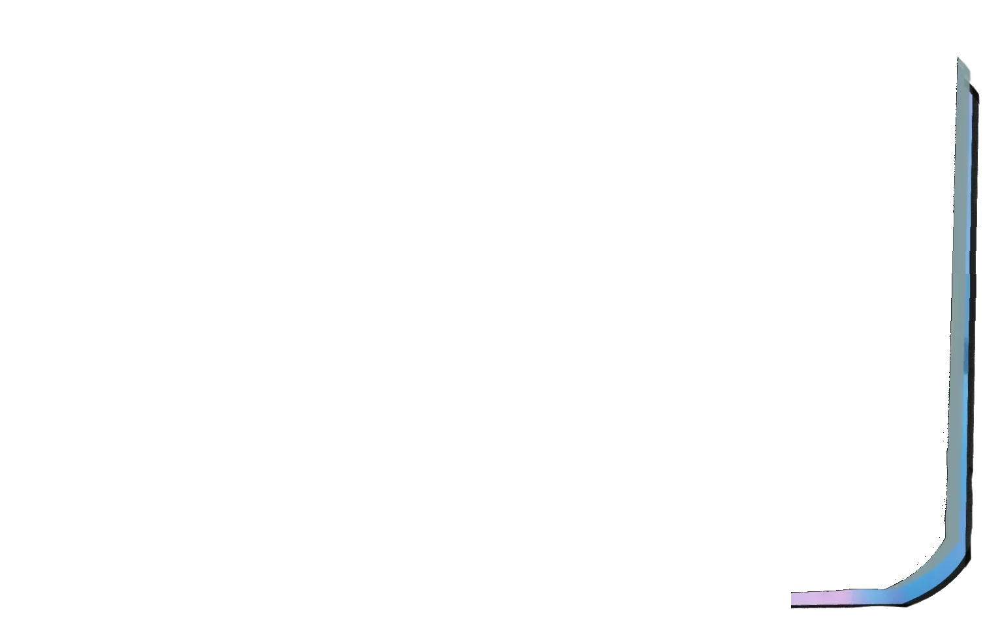
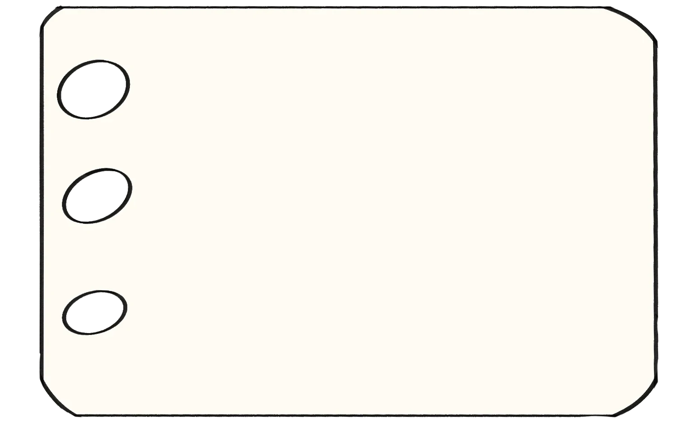
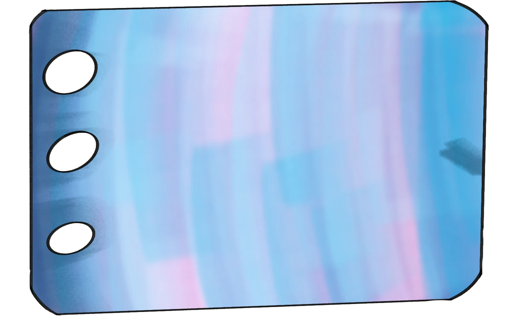
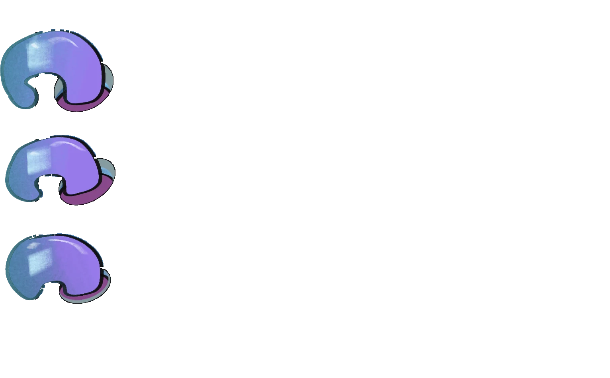
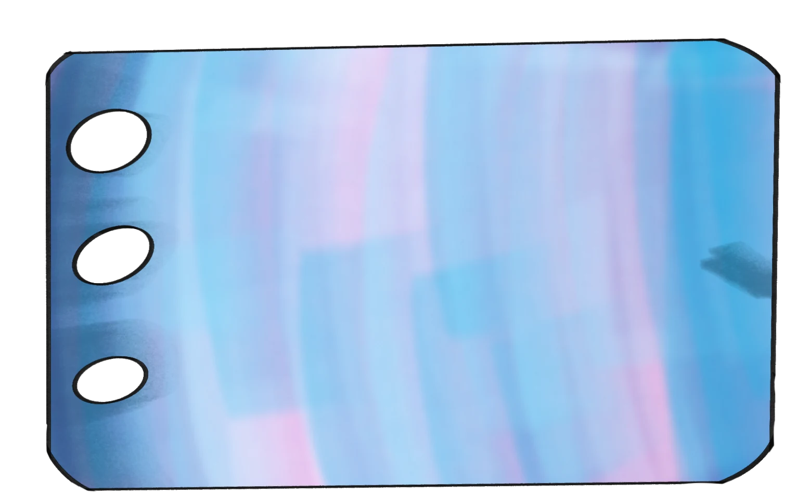
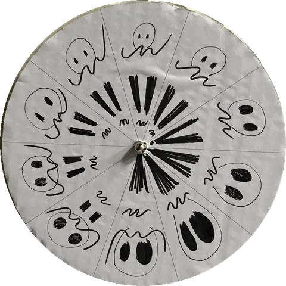

The Playground
Side projects, just for fun.
click the purple tab to open · psst, the stickers move!


That's all for now!
More doodles soon 🦈



Mama · short film, LUCA 2022–2023
Japanese tea room · animated background
Above the clouds
Metamorphosis

Ghosts · spinning paper disc (phenakistoscope)
…ease… · hyperlapse
Set on Fire · final film
Set on Fire · animatic